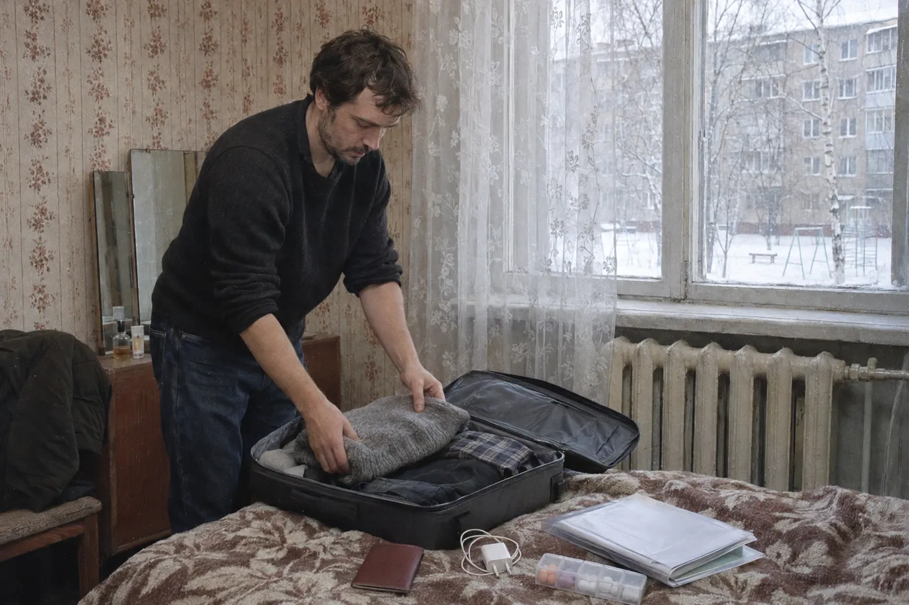

Статьи и база знанийо защите в Испании
Чтобы понимать процедуру и чувствовать себя увереннее. Пишем по своему опыту и опыту людей, которые прошли этот путь с нами.
Полная база знаний
о защите в Испании
Пошаговые гайды и чек-листы: от загранпаспорта и визы до интервью, красной карты и жизни после. Бот пришлет ссылку на базу сразу после подписки на канал.

 Основы
ОсновыКто может запросить международную защиту в Испании
Защиту дают не только активистам и журналистам. Разбираем, кто может ее запросить, что считается преследованием и почему страх будущего преследования – тоже основание.
5 мин чтения Основы
ОсновыПлюсы и минусы защиты
Международная защита дает легальный статус, медицину, право на работу и быстрый путь к гражданству. Но у нее есть цена: запрет на поездки домой, долгое ожидание и непростые условия приема.
3 мин чтения Подача
ПодачаПодача в аэропорту
Можно ли попросить защиту прямо на границе, что для этого нужно гражданам России и как устроены первые дни в закрытом центре при аэропорту.
6 мин чтения Подача
ПодачаПервый визит в полицию
Как взять ситу, что взять с собой в участок и что происходит на первом визите, когда вы регистрируете намерение просить международную защиту.
5 мин чтения Кейс
КейсДоказательства для кейса
Какие доказательства можно приложить к кейсу на международную защиту, как оформить письма свидетелей и почему поддельные документы только навредят.
4 мин чтения Интервью
ИнтервьюИнтервью в полиции
Интервью – разговор с офицером, на котором записывают вашу историю. Рассказываем, что спрашивают, какие документы взять и как подготовиться, чтобы не сбиться.
4 мин чтения Кейс
КейсКак написать кейс для международной защиты
Кейс – письменная история, на которую опирается весь запрос на защиту. Разбираем, из каких частей он состоит, что в нем писать и каких ошибок избегать.
5 мин чтения Документы
ДокументыКак получить NIE
NIE – личный номер иностранца в Испании, без него не обойтись в банке, у нотариуса и в госучреждениях. Рассказываем, где его получают, что взять с собой и как оплатить пошлину.
4 мин чтения Документы
ДокументыCita previa: как получить запись
Без ситы в Испании не попасть ни на подачу запроса о защите, ни на отпечатки для карты. Объясняем, как ловить запись самостоятельно, когда обновляются слоты и как ускорить процесс расширением AutoFill.
5 мин чтения Жизнь в Испании
Жизнь в ИспанииПрограмма приема
Государственная программа помощи дает жилье, питание, пособие, курсы и юриста. Но регион выбирают за вас, жилье часто общее, а с программы могут снять. Разбираем этапы и кому она подходит.
4 мин чтения
До отъездаЧто сделать до отъезда из России: паспорт, виза, документы, телефон
Загранпаспорт, шенгенская виза, доверенности, связь, здоровье и доказательства для кейса. Разбираем, что успеть сделать в России, пока это еще просто.
6 мин чтения Документы
ДокументыКрасная карта и решение
Что происходит после интервью: как получить и продлевать красную карту, когда можно работать, как узнать решение онлайн и какие бывают ответы. И что делать после одобрения.
5 мин чтения Жизнь в Испании
Жизнь в ИспанииПереезд с животными
Чип, ветпаспорт, прививка от бешенства, ветсвидетельство и евросправка. Разбираем, какие документы нужны питомцу для выезда из России, как договориться с авиакомпанией и чем переезд с животным отличается для тех, кто запрашивает защиту.
5 мин чтения Жизнь в Испании
Жизнь в ИспанииПолезные приложения
Чем пользоваться в первые месяцы в Испании: транспорт, такси, жилье, работа, банки, связь, язык и сообщества. Плюс короткая инструкция, как получить электронную подпись.
5 мин чтения
¿Empezamos?
Расскажите, где вы сейчас и что вас интересует.
На бесплатной оценке шансов скажем, подходит ли
вам международная защита и с чего начать.
Мы не передаем информацию третьим лицам. Общение с нами не нарушает законы России.